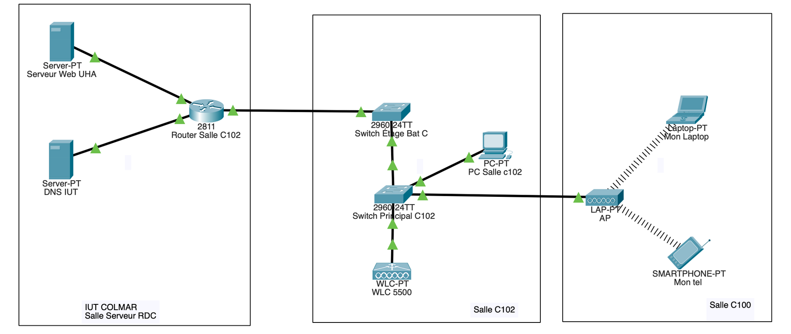

SAÉ 1.03
Découvrir un dispositif de transmission
Objectif
Étude complète d'une infrastructure sans fil existante et optimisation de son déploiement physique et logique, allant de la pose de câbles à l'analyse avancée des signaux radio.
Architecture réalisée
- Mesures de puissance et perte du signal Wi-Fi à travers différents obstacles avec Acrylic
- Création de heatmaps pour visualiser la portée et la qualité des APs
- Simulation de l’infrastructure Wi-Fi sur Cisco Packet Tracer
- Configuration centralisée des points d’accès via appliance Cisco
- Tests de performance réseau avec Speedtest et recommandations de placement des APs
Compétences R&T mobilisées
- AC12.01 — Mesurer, analyser et commenter les signaux.
- AC12.03 — Déployer des supports de transmission.
- AC11.01 — Maîtriser les lois fondamentales de l’électricité afin d’intervenir sur des équipements de réseaux et télécommunications.
Technologies
Preuve
